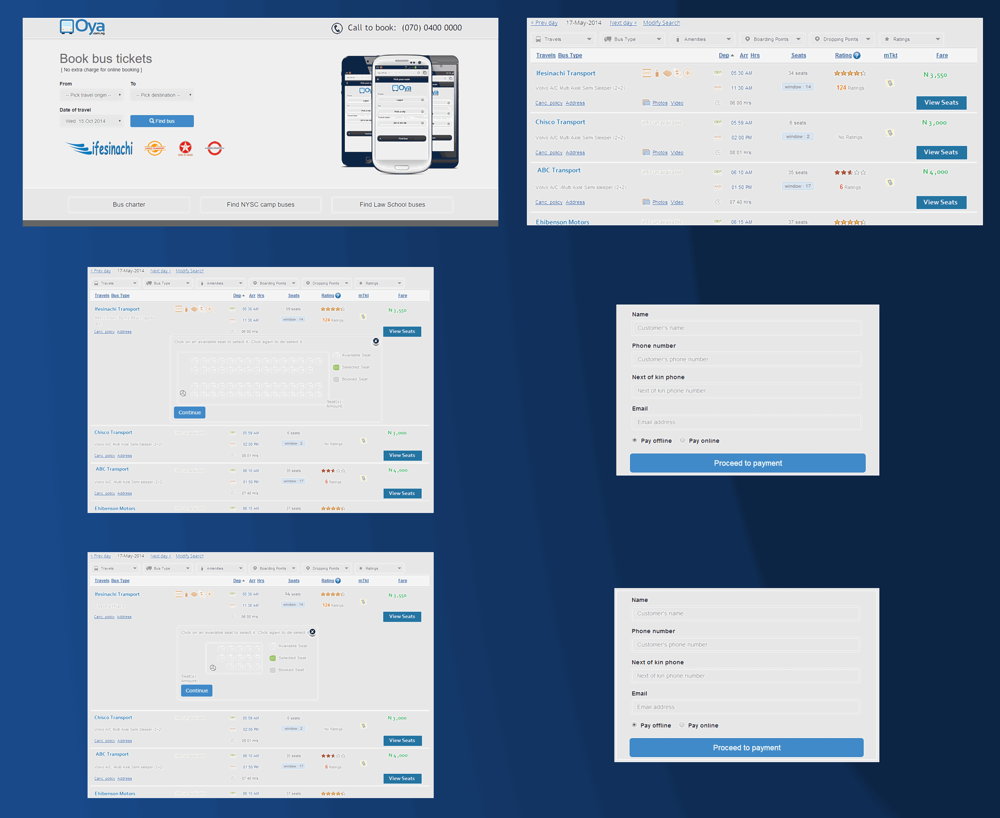

Oya
Role
Sales. Then Product Development Manager. I also wore the hat of Lead Designer
Overview
Oya is an online bus ticketing service. You can buy bus tickets to inter-state locations. This was my first ever design attempt

My Oya Story
This was the project that made me stumble into design and product management; and I have loved it ever since. Oya.com.ng was short staffed having only had one technical lead who was swamped with backend code. So I had to step in when it became apparent that customer feedback was going to be repeatedly treated in a haphazard manner. I quickly had to learn AGILE methodologies, wireframing, and UX philosophies and design principles to prevent our only tech lead from quitiing.
What I did
I honestly do not know how I did it other than wing it, however I know what I did: I redesigned the inital boking process from being accessed after signing in to allow users do what they came to the site to do- book bus tickets just as they would at the terminals
